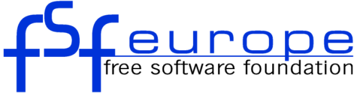
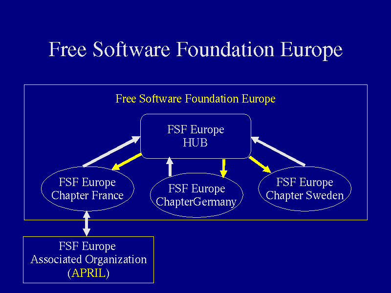
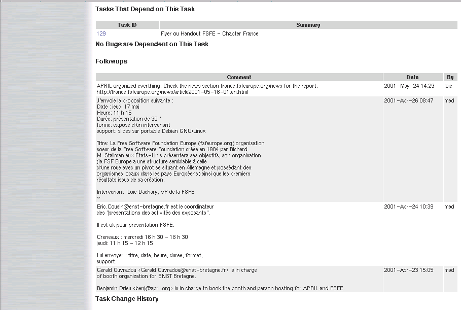
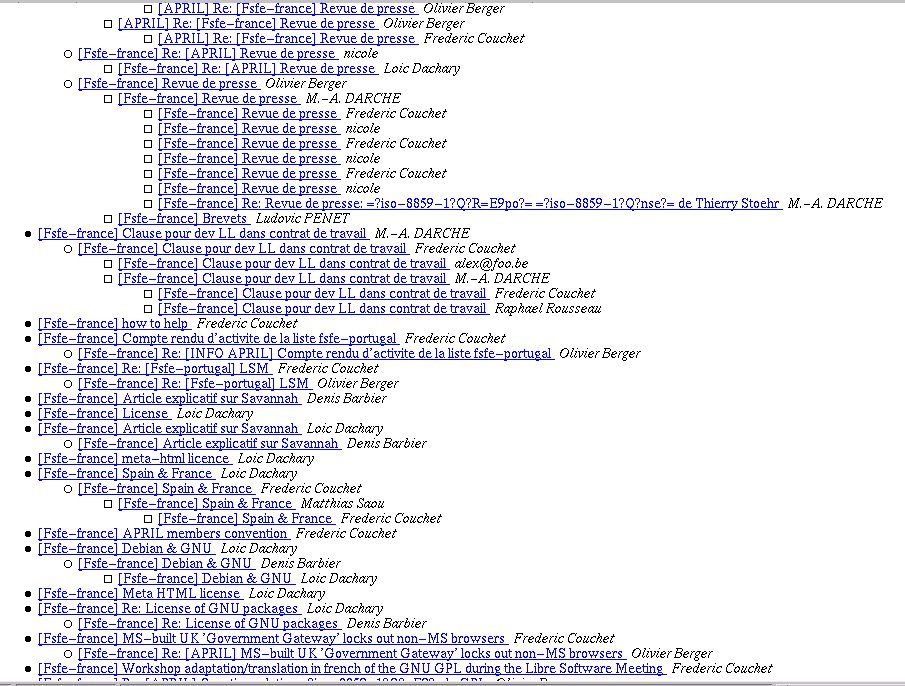
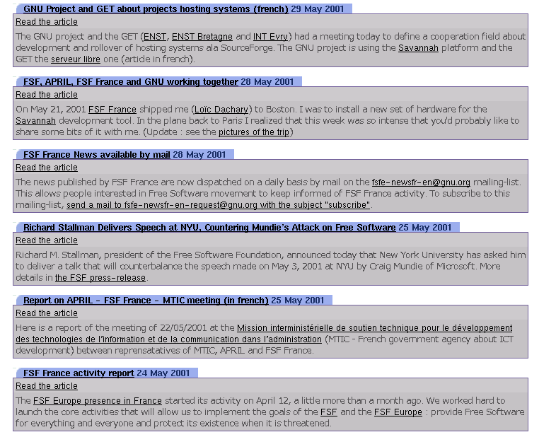
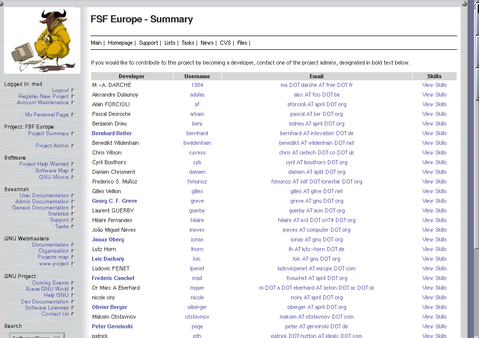

Free Software Foundation Europe
Freedom, Cooperation, Transparency

Libre Software Meeting
Saturday 7 july 2001
(page 1)
Free Software Foundation
- What is Free Software ?
- Think to free speech or free markets, not free beer
- Four freedoms:
- - run the program, for any purpose
- - study how the program works
- - redistribute copies
- - modify, improve the program
- The opposit of free software is not commercial software but proprietary software
- What is the FSF ?
- Founded in 1985 by Richard M. Stallman
- GNU Project (GNU System: GNU/Linux, GNU/Hurd)
- Free Software Philosophy/Movement
- Legal aspects of Free Software (GNU GPL)
- Special characteristics
- short decisions making process
- long term vision
(page 2)
Free Software Foundation Europe
- Why do we need a FSF Europe ?
- Help Free Software organizations to cooperate in Europe
- Political & Press contacts
- Practical aspects (GNU project ...)
(page 3)
Free Software Foundation Europe
- What are the goals of FSF Europe ?
- Take care of all aspects of Free Software in Europe
- Disseminate Free Software in Europe
(page 4)
Free Software Foundation Europe
- Disseminate Free Software in Europe
- Provide Free Software for all needs
- Enable individuals and companies to join the Free Software Movement
- Establish dialog (VideoLan ...)
- Cooperation, establish working relationships between Free Software organizations
- Access to the GNU project
(page 5)
Free Software Foundation Europe
- Monitor evolution of legal systems
- Setup a FSF-lawyers European network
(page 6)
Free Software Foundation Europe

(page 7)
Free Software Foundation Europe
- What is the current status ?
- Official activities have begun in march 2001
- First General Assembly on May 6th 2001
- FSFE France has been created on April 12th 2001
- French and German chapters were founded and active
- Hardware and information infrastructure (Web, task lists, mailing lists ...)
- First participation in projects
(page 8)
FSF Europe - Chapter France
- Technical Infrastructure : Lolix, Nevrax
- Associate Organizations in France : APRIL, OFSET
- Translation/adaptation in french of the GNU GPL
- Contacts with institutions, people, journalists, MP\
- (MTIC, Technopole ...)
- CoopX: Savannah, PeCoVall, Tuxfamily
- Education (OFSET and FSF China, GNU web site...)
(page 9)
Free Software Foundation Europe

(page 10)
Free Software Foundation Europe
- Cooperation, transparency

(page 11)
Free Software Foundation Europe

(page 12)
Free Software Foundation Europe
- Georg C. F. Greve, Werner Koch, Peter Gerwinski, Bernhard Reiter, Frederic Couchet,\
- Loic Dachary, Jonas Oberg, Alessandro Rubini, Raphael Rousseau
but not only
(page 13)
Free Software Foundation Europe
Volunteers

(page 14)
Free Software Foundation Europe
FSF Europe and the world
- Looking for Free Software Movement around the world
- China, Japan, India, South Africa, Canada, maybe others ?
- Show what we do, find out what they do
- Working relations are slowly building
- Tell people they can launch a Free Software Movement in their country
(page 15)
Free Software Foundation Europe
Conclusions
- Official sister organization of FSF
- Everybody can become involved in the Free Software Movement through the FSF Europe.
(page 16)
Free Software Foundation Europe
Where I can find more information ?
(page 17)